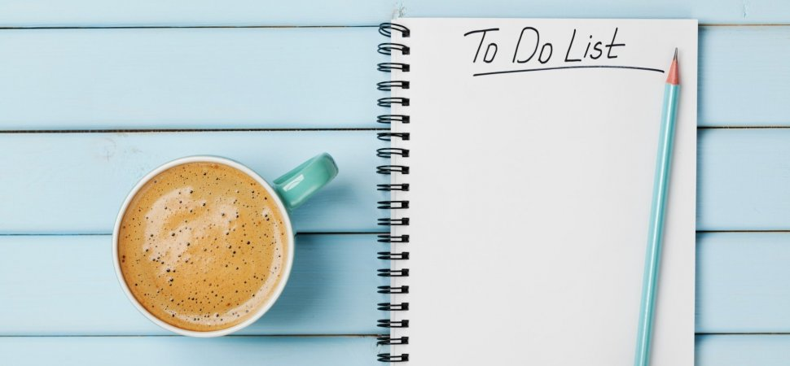

Check It - The Simple To Do List
Struggling to Stay On Top Of Your To-Dos?

Staying motivated and on-track can be tricky! Use this simple to do list to help you record all of your to-do tasks. When you've completed the task, check it off and it will move to the bottom of your list auto-magically! Done with that task forever? Click the delete button and your task will be permanently removed.